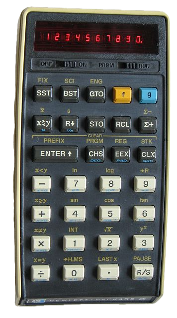

An ergonomic scientific calculator using RPN (Reverse Polish Notation) for professional and educational use. Experience the precision of vintage HP calculators on your modern device.
Key Features
RPN (Reverse Polish Notation): Efficient calculations using the HP25 method.
Ergonomic Design: Portrait/landscape orientation for iPhone and iPad.
Voice Recognition: Activate keyboard or voice dictation with a shake or tap.
Easy Sharing: Share results via Facebook, Twitter, or email.
Display Formats: Fixed, scientific, and engineering with custom decimals.
Advanced Functions: Trigonometry, hyperbolic functions, statistics, and more.

Programming & Logs
Store up to 10 custom programs (e.g., quadratic solver, f(t)=t×sin(t)).
Visual graphing of functions like y=f(x).
Calculation logbook with copy/paste support.
Visual feedback: blinking indicators and wobbling digits.